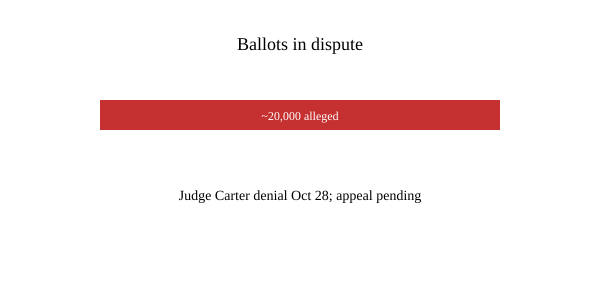

California · elections · 30 October 2026
Justice Department appeals judge’s denial and issues subpoenas in California ballot case.

What is agreed across desks
On 28 October 2026, U.S. District Judge David O. Carter of the Central District of California denied a Department of Justice request for a temporary restraining order that would have required California election officials to segregate approximately 20,000 mail ballots that the department alleged may have been cast by noncitizens. The judge wrote that granting the request would “wreak havoc” on the ongoing election and that the government had not shown a likelihood of success or irreparable harm sufficient to override the state’s administration of its elections. The Justice Department filed a notice of appeal the same day.
Separately, federal prosecutors issued grand-jury subpoenas to Los Angeles County Registrar-Recorder employees seeking records related to earlier letters from federal officials about alleged noncitizens on voter rolls. The midterm elections are scheduled for 3 November. Early voting and mail-ballot processing were already under way when the emergency request was filed.
What is only a quote
Bill Essayli, the top federal prosecutor in Los Angeles, said the ongoing processing of ballots “disenfranchises American citizens through dilution.” That is a legal argument, not a court finding. Judge Carter’s opinion describes the government’s list as not credible for the purpose of emergency relief; it is not a final adjudication of the citizenship status of any individual voter. State officials have characterized most database matches as false positives arising from incomplete or outdated records.
Mechanism a reader needs
States administer elections under the Elections Clause and the Electors Clause of the Constitution. Federal law criminalizes noncitizen voting, but the authority of the executive branch to intervene in the middle of ballot processing by compelling a state to segregate ballots is contested. Judge Carter, a Clinton appointee, emphasized that never before had the federal government sought on the eve of an election to coerce a state to abandon its own procedures. A three-judge panel of the Ninth Circuit had earlier dismissed a prior emergency appeal as premature.
The Justice Department’s case rests on a commercially purchased voter list matched against other government data. Both sides acknowledge that the list contains an unspecified number of citizens. A special master was appointed by the district court to develop the factual record. Subpoenas seek internal communications about the federal letters sent in July and October.
California uses universal mail ballots. Segregating thousands of ballots mid-count would require new procedures for signature verification, citizenship checks, and provisional treatment, all while Election Day approaches. The judge found that the administrative burden and the risk of disenfranchising eligible voters outweighed the claimed emergency.
What this story is not
It is not a finding that 20,000 noncitizens voted or that none did. It is not a Supreme Court ruling. The photograph is of the state capitol exterior, a type/location still, not of any election office or courtroom.

Source articles and scores
Hero: Wikimedia Commons California State Capitol exterior (type/location). Chart is original SVG. No news-agency ballot photos used as sole source.